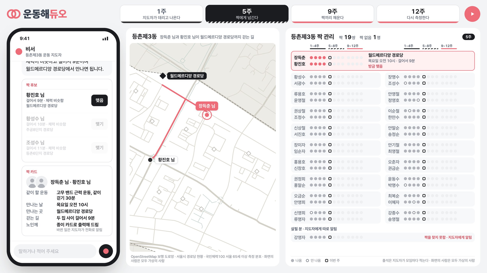
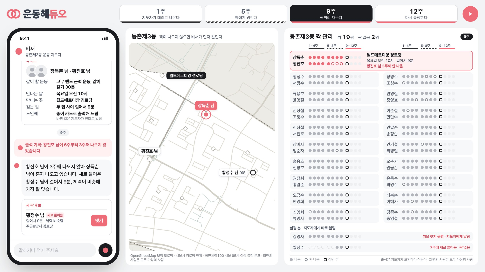
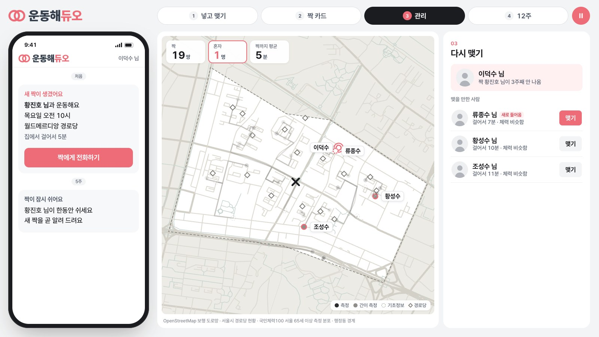

건강증진 아이디어 경진대회
건강과학 빅데이터로 여는 건강한 서울
운동정보회사 신입사원이 소개하는
운동해듀오
운동 짝을 맺어 주고,
끊기면 다시 맺어 주는 도구
결론누구에게, 무엇을, 어디서
결론부터
아플 때 도와줄 사람이 없고 운동하지 않는 서울 노인 약 16만 명에게 체력이 비슷한 운동 짝을 맺어 준다
누구에게
아플 때 도와줄 사람이 없고
운동하지 않는 서울 노인
약 16만 명
약 197만서울 노인
→약 44만운동 안 함
→약 16만도와줄 사람도 없음
근거
서울시 노인실태조사 원자료 3,039명
다섯 조건 비교
관계에서 17.8%p로 가장 크게 갈림
→
무엇을
체력이 비슷한 운동 짝을 맺고,
끊기면 다시 맺는 도구
운동해듀오
결혼정보회사를 본떴다
근거
서울 체력측정 기록 17,477명
짝 맺기 400번 시험
짝 사이 2분 걷기 차이 20.5회에서 9.6회
→
어디서
혼자 사는 수급 노인이
서울에서 가장 많은 동
강서구 등촌제3동
수급 노인은 48.0%, 비수급 노인은 20.1%가 도와줄 사람이 없다
가장 가까운 체력인증센터까지 4.6km
근거
서울 427개 동의 독거·수급 표와 체력인증센터 거리
세 기준으로 12곳
그 가운데 혼자 사는 수급 노인이 가장 많은 동
운동하지 않는 비율은 몸이 불편한지(7.4%p)보다 아플 때 도와줄 사람이 있는지(17.8%p)에 따라 더 크게 갈린다. 그래서 측정과 운동처방에 짝을 더한다
문제노인과 서울
노인과 서울을 보는 이유
서울 노인 22.6%, 약 44만 명은 일주일에 운동하지 않는다
2024년 생명표(전국)
65세 기대여명 21.7년 가운데
12.6년이 유병기간
유병기간은 그 가운데 질병이나 사고로 아픈 상태로 보낼 기간
서울시 노인실태조사 2024, 주민등록 인구
서울 65세 이상 약 197만 명 가운데
약 44만 명은 일주일에 운동하지 않는다
서울시 노인실태조사의 운동하지 않는 비율 22.6%를 서울 65세 이상 주민등록 인구에 곱했다
서울 인구의 21.2%가 65세 이상이다. 서울시 노인실태조사, 서울 체력측정 기록, 서울 427개 동 자료로 봤다
국가데이터처 2024년 생명표(전국), 서울시 노인실태조사 2024 원자료, 행정안전부 주민등록 인구(2026년 9월)
건강하게 오래 사는 것을 목표로, 운동하지 않는 약 44만 명부터 봤다
문제다섯 조건 비교
누가 운동하지 않는지 서울 노인 3,039명을 다섯 조건으로 나눠 비교했다
운동하지 않는 비율은 몸(7.4%p)보다 관계(17.8%p)에서 더 크게 갈린다
서울 노인 3,039명
서울시 노인실태조사 2024, 가중치 적용
다섯 조건마다 둘로 나눔
해당하는 노인과 해당하지 않는 노인
운동하지 않는 비율 비교
두 무리의 차이를 %p로
차이가 가장 큰 조건은 관계
관계 17.8%p, 몸 7.4%p
다섯 조건에서 운동하지 않는 비율의 차이(해당하는 노인과 해당하지 않는 노인)
관계
몸이 아파 집안일을 부탁해야 할 때 도와줄 사람 없음 36.5% · 있음 18.7%
17.8%p
디지털
기기 기능 12개 가운데 3개 이하 사용
13.2%p
몸
계단 오르기·400m 걷기·일상생활 가운데 하나라도 어려움
7.4%p
돈
기준중위소득 50% 미만이거나 기초생활 수급
5.8%p
5.7%p
몸이 불편한 노인끼리 비교해도 도와줄 사람이 없는 쪽이 16.0%p 높다
서울시 노인실태조사 2024 원자료, 가중치 적용. 약 16만 명은 도와줄 사람이 없고 운동하지 않는 비율 8.0%에 서울 65세 이상 주민등록 인구를 곱한 값
도와줄 사람이 없고 운동하지 않는 서울 노인은 약 16만 명이다
문제운동 희망 의향으로 다시 나눔
운동을 희망하는 정도로 나눠 다시 비교했다
운동을 희망하는 노인끼리도 도와줄 사람이 없는 쪽이 운동하지 않는 비율이 두 배 가깝다
서울 노인 3,039명
서울시 노인실태조사 2024, 가중치 적용
운동 희망 의향으로 둘로 나눔
많이·다소, 보통 이하
무리마다 도와줄 사람 유무로 비교
일주일에 운동하지 않는 비율
일주일에 운동하지 않는 비율
운동 희망 의향 많이·다소
도와줄 사람 없음
24.1%
도와줄 사람 있음
12.6%
운동 희망 의향 보통 이하
도와줄 사람 없음
53.1%
도와줄 사람 있음
38.9%
서울시 노인실태조사 2024 원자료, 본인 응답 3,039명, 가중치 적용
운동을 희망하는 노인끼리 봐도, 그렇지 않은 노인끼리 봐도 도와줄 사람이 없는 쪽의 비율이 높다
문제글과 면담 연구
그 까닭을 노인 본인, 가족, 돌봄 인력의 글 692건과 면담 연구에서 읽었다
면담 연구에서 누가 같이 가 준 16건 가운데 11건이 또래였다
기존 면담 연구 26편에서 뽑은 사례
또래 11건
가족 3, 생활지원사 1, 이웃 1
그 밖의 계기 10건
노인 본인·가족·돌봄 인력의 글 692건에서
혼자 사는 사람은 누가 데리고 나와야 하는데 그런 사람이 없다
돌봄 인력 · 기사
혼자는 안돼요... 못해...
본인 · 김경오 2019, 면담 연구
혼자 새로운 곳에 가는 건 자신 없는데, 여기서 마음 맞는 친구들과 같이하면 훨씬 쉽게 하지.
또래 · 유현미 2020, 면담 연구
모은 글 692건(기사, 돌봄 사례집, 가족과 본인의 글), 노인 면담 연구 26편(김경오 2019, 이유미 2018, 유현미 2020, 김희경 2023 등)
혼자서는 첫걸음이 어렵고, 같이 가 준 사람은 또래일 때가 많았다
지금 방식다시 측정하러 온 사람
지금의 측정과 운동처방만으로 다시 오는지 서울 체력측정 기록 34,415건에서 셌다
측정받고 석 달 뒤에 다시 측정하러 온 사람은 2만 명 가운데 710명이다
지금의 측정과 운동처방
첫 측정 뒤 9~15주 사이에 다시 측정한 사람
3.5%20,034명 가운데 710명
서울 65세 이상 회원 전체가 분모다
다시 온 사람
2분 제자리 걷기, 두 번 측정한 623명의 중앙값
107회→114회
첫 측정과 다음 측정
또래가 함께한 사례. 부산은 석 달 동안 걸은 날이 걷기 동아리에 든 사람 78일, 들지 않은 사람 57일. 영국 Walk with Me는 여섯 달 뒤 평가에 50명 가운데 43명 참석
서울 체력측정 원자료(위치기반 체력측정 및 운동처방 정보, 서울 65세 이상 34,415건), 부산 1530 건강걷기, 영국 Walk with Me
측정과 운동처방만으로는 다시 오는 사람이 드물다
맺는 법어떻게 맺느냐에 따라
어떻게 짝을 맺어야 할지 서울 체력측정 기록 17,477명으로 400번 시험했다
아무렇게나 맺으면 짝끼리 2분 걷기가 20.5회 차이 나고, 체력으로 맺으면 9.6회다
첫 측정자 17,477명
다섯 항목이 모두 있는 서울 65세 이상
같은 성별 20명을 뽑는다
점 그림은 한 번 뽑은 예
두 방법으로 둘씩 맺는다
아무렇게나, 체력이 비슷한 사람끼리
400번 되풀이한 평균
짝 사이 2분 걷기 차이
아무렇게나
맺으면
400번 평균
시험 한 번의 예
20.5회
체력이 비슷한
사람끼리
다섯 항목 차이를 합친
거리가 가장 작게
2분 제자리 걷기 적음
많음
“둘이 템포가 안 맞거든요. 하나는 빨리 가고” 노인 면담 연구
다섯 항목: 2분 제자리 걷기, 의자 일어서기, 악력, 표적 돌아오기, 8자 보행
의자 일어서기 차이 6.6회 → 2.7회, 악력 차이 6.0kg → 3.7kg
두 기준 안에 든 짝 10% → 39% (2분 제자리 걷기 차이 10회 안, 의자 일어서기 차이 2회 안)
서울 체력측정 원자료. 오른쪽 숫자는 짝 사이 2분 제자리 걷기 차이의 평균
아무렇게나 맺을 때보다 짝 사이 2분 걷기 차이가 절반 아래로 준다
맺는 법많이 모일수록 잘 맞는다
몇 명을 모아야 하는지 후보를 10명과 40명으로 바꿔 시험했다
후보를 10명에서 40명으로 늘리면 두 기준 안에 든 짝이 27%에서 53%로 는다
8장과 같은 방법으로, 한 번에 맺는 사람만 10명과 40명으로 바꿔 400번씩 되풀이했다. 점 그림은 한 번 맺은 예다
두 기준 안에 든 짝: 2분 제자리 걷기 차이 10회 안, 의자 일어서기 차이 2회 안
서울 체력측정 원자료, 다섯 항목이 모두 있는 첫 측정자 17,477명
후보는 동 전체에서 모으고, 짝을 맺는 계산은 도구가 한다
맺는 법운동해듀오
그 계산을 하는 도구
운동해듀오는 결혼정보회사처럼 짝을 맺고, 끊기면 다시 맺는다
결혼정보회사정보를 받는다
결혼정보회사맞는 사람을 찾는다
결혼정보회사맺은 뒤 관리한다
운동해듀오넣는 것
간이 측정있으면 더
의자 일어서기, 표적 돌아오기, 악력
측정 기록이 없으면 나이와 성별로 먼저 맺고, 첫 만남에서 측정해 다시 계산한다
→
운동해듀오계산
체력이 비슷한 정도걸어서 가까운 정도
두 가지를 함께 따져, 전체를 한 번에 맺는다
한 사람이 그만두면
다시 맺는다
→
운동해듀오나오는 것과 다시 맺기
짝 카드
체력 차이
걸어서 몇 분
둘 다 가까운 경로당
함께할 운동처방
추천만 하고, 담당자가 고칠 수 있다
끊기면 혼자 된 사람끼리 다시 맺는다
지도자나 복지사가 정보를 넣으면 운동해듀오가 짝을 추천하고, 끊기면 다시 추천한다
어디서먼저 써 볼 동
어디서 먼저 쓸지 서울 427개 동의 자료로 골랐다
세 기준으로 거른 12곳 가운데 혼자 사는 수급 노인이 가장 많은 곳이 등촌제3동이다
기둥 하나가 서울의 행정동 하나. 높이는 혼자 사는 수급 노인 수
걸러진 동세 기준을 다 통과한 12곳체력인증센터와 2km 원
427서울 행정동
기준 1혼자 사는 수급 노인 수 상위 10%
수급 노인은 48.0%, 비수급 노인은 20.1%가 도와줄 사람이 없다
43곳
22곳
12곳
고르기그 가운데 혼자 사는 수급 노인이 가장 많은 곳
강서구 등촌제3동
서울 동 평균의 6.5배 · 수는 서울 1위, 65세 이상 가운데 비율은 4위
기준을 상위 10%로 잡든 20%로 잡든 등촌제3동은 세 기준을 모두 통과한다
서울 427개 동 독거노인·수급자·시설 표, 동별 체력인증센터 거리 표, 서울시 노인실태조사 2024
12곳 가운데 혼자 사는 수급 노인이 가장 많은 강서구 등촌제3동에서 먼저 써 본다
어디서12주 동안 하는 일
등촌제3동에서 12주 동안 하는 일
처음에는 지도자가 데리고 나오고, 12주에 걸쳐 그 일을 짝에게 넘긴다
짝
운동 내용은 측정 때 받은 운동처방이다. 짝과 같이 한다
시연시연
등촌제3동을 예로 돌려 본다
정보를 넣으면 짝이 추천되고, 한 사람이 그만두면 다시 추천된다




가상의 사람으로 돌려 본 시연
1정보 넣기나이, 성별, 사는 곳과 측정 기록을 넣는다
2짝 후보체력이 비슷하고 걸어서 가까운 사람을 추천한다
3맺기담당자가 확인해 맺으면 지도에 선으로 이어진다
4관리한 사람이 그만두면 혼자 된 사람에게 새 짝을 추천한다
세는 것세는 것과 마무리
시범 12주 동안 세는 것
등촌제3동에서 짝이 12주까지 이어지는지와 체력이 달라지는지를 확인한다
1주
2주
3주
4주
5주
6주
7주
8주
9주
10주
11주
12주
첫날 참여
지도자가 찾아간 효과
찾아간 사람 가운데
첫날 나온 사람
안 나온 날
짝끼리 챙기는 정도
안 나온 날 짝이 연락한 횟수,
다음에 다시 나온 횟수
12주
짝이 이어지는 정도
처음 맺은 짝 가운데
12주까지 같이 운동한 짝
짝이 끊긴 사람 가운데 다시 맺어 12주까지 나온 사람
12주 다시 측정
체력 변화
다시 측정한 2분 걷기와
의자 일어서기
도와줄 사람이 없는 노인 곁에
맞는 짝이 있게 해서
이 기간을 줄여 보겠다
65세 기대여명 21.7년
유병기간 제외9.1년
유병기간12.6년
등촌제3동에서 12주 동안 돌려 보고, 결과를 숫자로 확인한다
건강증진 아이디어 경진대회
건강과학 빅데이터로 여는 건강한 서울
부록질문 답부록 1
본 자료와 표본 수
자료별 표본 건수
| 자료 | 표본 | 쓴 장 |
|---|
| 서울시 노인실태조사 2024 원자료, 가중치 적용 | 본인 응답 3,039명. 수급 응답자 246명 | 2, 3, 4, 11장, 부록 2 |
| 같은 조사, 운동 희망 의향별 비교 | 의향 많이·다소와 보통 이하로 나눠 도와줄 사람 유무로 비교 | 5장 |
| 서울 65세 이상 주민등록 인구 | 1,965,896명. 서울 인구의 21.18% | 2, 3, 4장 |
| 위치기반 체력측정 및 운동처방 정보, 서울 65세 이상 | 34,415건, 21,026명. 2022년 1월~2026년 8월 | 2, 7, 8, 9장 |
| 다시 측정하러 온 사람 | 9~15주 20,034명 가운데 710명. 15주 안 10.1%. 1년 안 16,383명 가운데 4,557명(27.8%) | 7장, 부록 3 |
| 다시 측정한 사람의 변화 | 항목별 623~718명. 표적 61%, 8자 보행 63%, 악력 54%가 좋아짐 | 7장, 부록 3 |
| 짝 맺기 시험 | 다섯 항목이 모두 있는 첫 측정자 17,477명. 400번 되풀이. 가장 안 맞는 짝 4.69→3.03 | 2, 8, 9장, 부록 4 |
| 측정 없이 추정하기 시험 | 회원별 첫 측정 17,521명, 5겹 교차검증. 간이 측정 셋 59.2%, 악력만 50.7% | 부록 5 |
| 동별 독거노인·수급자·시설 표, 체력인증센터 거리 표 | 서울 427개 동. 12곳 가운데 다섯이 강서구 | 2, 11장 |
| 노인 본인·가족·돌봄 인력의 글 | 모은 글 692건, 이유가 나온 글 374건 | 6장 |
| 노인 면담 연구 | 인용을 뽑은 연구 26편, 사람이 계기가 된 사례 26건 | 6, 8장 |
| 부산 1530 건강걷기, 영국 Walk with Me | 석 달 동안 걸은 날, 여섯 달 뒤 평가 50명 | 7장, 부록 3 |
| 생명표 | 국가데이터처 2024년, 국가통계포털 화면에서 읽은 값 | 3, 14장 |
서울 자료는 원자료에서 다시 계산했고, 생명표와 부산·영국은 발표된 값을 옮겼다
부록질문 답부록 2
혼자 사는 노인과 겹치는 정도
도와줄 사람이 없는 노인의 60.4%는 가족과 산다
도와줄 사람이 없는 서울 노인이 사는 방식
일주일에 운동하지 않는 비율, 도와줄 사람 없음과 있음
| 몸 불편 여부별 | 없음 | 있음 | 차이 |
|---|
| 몸이 불편한 노인 | 38.7% | 22.7% | 16.0%p |
| 불편하지 않은 노인 | 34.5% | 16.7% | 17.8%p |
| 도움받을 사람을 물은 문항별 | 없음 | 있음 | 차이 |
|---|
| 몸이 아파 집안일을 부탁할 사람 | 36.5% | 18.7% | 17.8%p |
| 우울할 때 이야기할 사람 | 37.7% | 18.3% | 19.4%p |
| 세 상황 모두 | 41.4% | 19.6% | 21.8%p |
수급 노인이 많은 동을 고른 이유
도와줄 사람이 없는 비율
수급 노인
48.0%
수급하지 않는 노인
20.1%
수급 응답자 246명
측정받은 사람이 원래 운동하던 사람일 때
그래서 측정값이 없어도 기초정보로 맺고,
첫 만남에서 측정해 바로잡는다
대상의 크기
서울에 약 16만 명이고, 운동하지 않는 노인 가운데 35.3%다
서울시 노인실태조사 2024 원자료, 본인 응답 3,039명, 가중치 적용. 측정 관련 답은 서울 체력측정 원자료
도와줄 사람이 없는 노인은 혼자 사는 노인만이 아니다
부록질문 답부록 3
다시 측정한 사람과 또래가 함께한 사례
다시 측정한 사람은 9~15주 사이 3.5%, 1년 안으로 넓히면 27.8%다
첫 측정 뒤 다시 측정한 사람
| 기간 | 사람 | 비율 |
|---|
| 9~15주 사이 | 20,034명 가운데 710명 | 3.5% |
| 15주 안 | 20,034명 가운데 2,018명 | 10.1% |
| 1년 안 | 16,383명 가운데 4,557명 | 27.8% |
두 번 측정한 사람의 변화(각 측정의 중앙값)
| 항목 | 사람 | 첫 측정 | 다음 측정 | 좋아진 사람 |
|---|
| 2분 제자리 걷기 | 623명 | 107회 | 114회 | 63% |
| 의자 일어서기 | 635명 | 20회 | 22회 | 62% |
| 표적 돌아오기 | 641명 | 5.7초 | 5.4초 | 61% |
| 8자 보행 | 644명 | 23.5초 | 22.5초 | 63% |
| 악력 | 718명 | 23.3kg | 23.7kg | 54% |
또래가 함께한 사례
부산 1530 건강걷기 · 석 달 동안 걸은 날
걷기 동아리에 든 사람78일
들지 않은 사람57일
영국 Walk with Me · 여섯 달 뒤 평가에 참석한 사람
50명 가운데 43명
두 사례 모두 교육받은 봉사자가 함께했다
서울 체력측정 원자료(서울 65세 이상), 부산 1530 건강걷기, 영국 Walk with Me
다시 측정한 사람은 다섯 항목 가운데 넷에서 60% 넘게 좋아졌다
부록질문 답부록 4
짝 맺기 세 방법
전체를 한꺼번에 맺으면 가장 안 맞는 짝의 거리가 4.69에서 3.03으로 준다
같은 성별 20명을 둘씩 맺기를 400번 되풀이한 평균. 서울 체력측정 첫 측정자 17,477명. 거리는 다섯 항목 차이를 합친 값
| 맺는 방법 | 2분 제자리 걷기 차이 | 의자 일어서기 차이 | 악력 차이 | 두 기준 안에 든 짝 | 가장 안 맞는 짝의 거리 |
|---|
| 아무렇게나 | 20.5회 | 6.6회 | 6.0kg | 10% | 5.40 |
| 가까운 사람부터 차례로 | 11.1회 | 3.2회 | 3.9kg | 42% | 4.69 |
| 합이 가장 작게 한꺼번에 | 9.6회 | 2.7회 | 3.7kg | 39% | 3.03 |
가장 안 맞는 짝의 거리
아무렇게나
5.40
가까운 사람부터 차례로
4.69
합이 가장 작게 한꺼번에
3.03
두 기준 안에 든 짝은 차례로 맺을 때 42%, 한꺼번에 맺을 때 39%로 비슷하다
서울 체력측정 원자료, 다섯 항목이 모두 있는 첫 측정자 17,477명
한꺼번에 맺으면 가장 안 맞는 짝의 거리가 가장 짧다
부록질문 답부록 5
측정 기록이 없는 사람의 추정
의자 일어서기 하나를 더하면 2분 걷기를 맞히는 비율이 49.3%에서 57.5%로 오른다
첫 측정 17,521명
서울 65세 이상 회원, 회원마다 첫 측정 하나
넣는 정보를 늘려 가며
나이·성별, 의자 일어서기, 간이 측정 셋
2분 걷기를 추정
5겹 교차검증, 실제 기록과 ±10회 안이면 맞힘
2분 제자리 걷기를 실제 기록의 ±10회 안으로 맞힌 비율
49.3%
57.5%
측정값이 있으면
그 값으로 다시 계산
체력인증센터에서 측정한 사람
의자 일어서기를 더하면 57.5%, 간이 측정 셋을 모두 더해도 59.2%
기초정보로 맺은 짝은 첫 만남에서 측정해 다시 계산한다
서울 체력측정 원자료, 65세 이상 회원별 첫 측정 17,521명
측정 기록이 없는 사람도 처음부터 짝을 맺을 수 있다
부록질문 답부록 6
찾는 사람과 맡는 사람
실무 세부는 시범을 맡을 주민센터·복지관과 정한다
시범 기관과 정할 일
찾는 사람대상 노인을 찾아 나서는 사람
명단명단을 갖고 도구에 넣는 사람
부르는 말처음 찾아갈 때 건네는 말
안 나온 날짝이 안 나온 날 연락하는 방법
비 오는 날밖에서 못 하는 날의 운동
제안하는 것
대상도와줄 사람이 없고 운동하지 않는 서울 노인, 약 16만 명
맺는 기준체력이 비슷하고 걸어서 가까운 사람끼리,
동 전체로 모아서
세는 숫자찾아간 사람 가운데 첫날 나온 사람 수, 12주까지 같이 운동한 짝 수, 안 나온 날 짝이 연락한 횟수와 다음에 나온 횟수
쓰는 자원서울에 이미 있는 경로당 운동 지도자와 체력인증센터
제안하는 것은 대상, 맺는 기준, 세는 숫자다